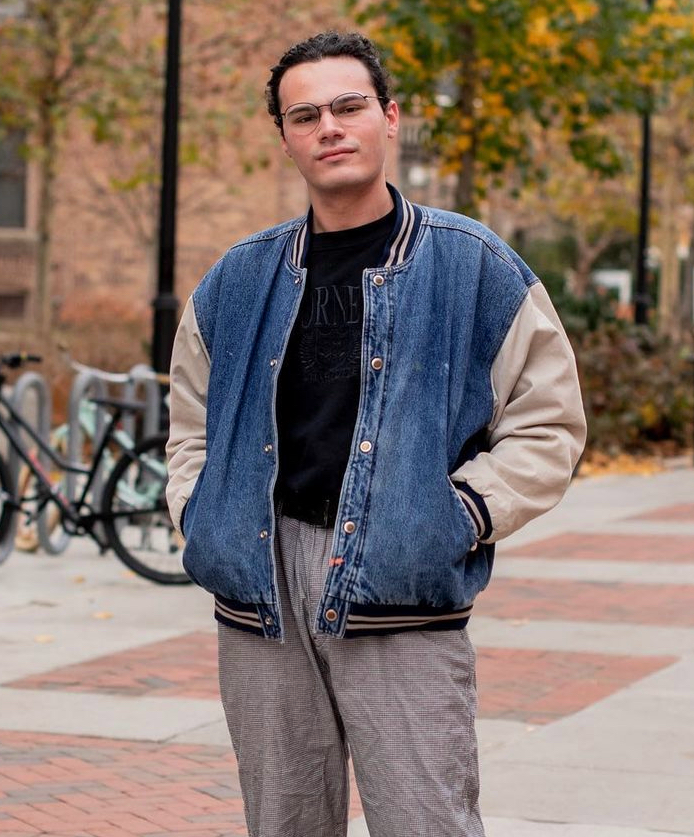

Sal Scarpa-Friedman is a multimedia graphic artist, UX/UI designer, marketing adept, and print junkie based in Richmond, VA. His creative approach to life and human-centered view of design inform his unique practice. Sal is currently working towards a B.F.A. in Graphic Design with a minor in Mixed and Immersive Reality Studies at Virginia Commonwealth University.
